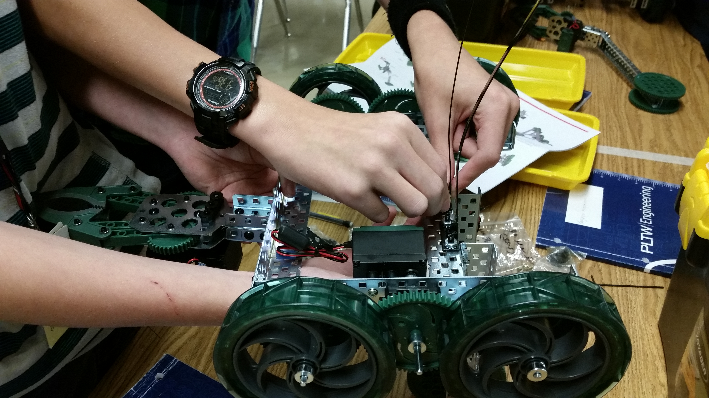

Secondary & K–12 — Teaching and Outreach
Project Lead The Way, robotics, engineering classes, and service-learning projects that engage students and communities.
Classrooms & Programs
- PLTW: Introduction to Engineering Design; Design & Modeling; Automation & Robotics
- Manufacturing Technology, Exploring Technology
- Worked with junior high and middle school students to develop robotics competitions

St. Baldrick’s & Community Service
Organized head-shaving charity events in junior high and middle school that raised thousands for childhood cancer research. Press coverage and photo galleries are available in the Media page.